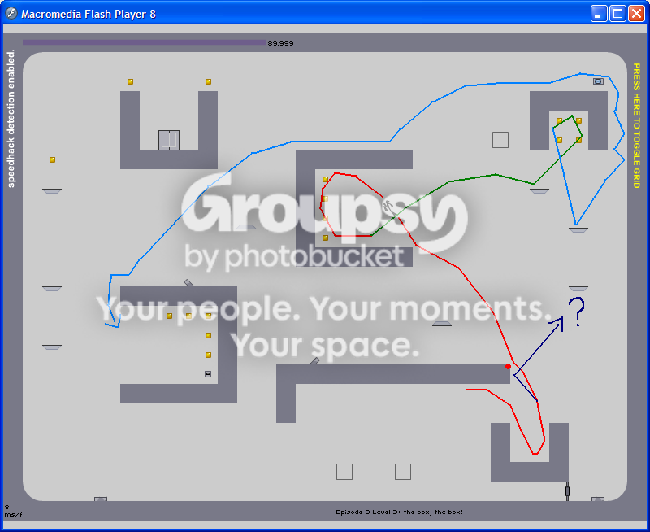

Been workin on this level for a while now, finally managed to pull off an innovation with a nice ending  Not sure if the innov is faster or not.. but it seems so
Not sure if the innov is faster or not.. but it seems so  Yay!
Yay! 
Not sure if the innov is faster or not.. but it seems so Yay! Not sure if the innov is faster or not.. but it seems so Yay! What's the point of this thread?
What's the point of this thread?


What's the point of this thread?
What's the point of this thread?What's the point of that post?
What's the point of this thread?What's the point of that post?
That post annoys me wedgie. I had just begun to feel bad about how we jumped all over incluye, when he most likely didn't know what the purpose of the High Scores forum was. This thread's purpose was clearly explained by 4 of the next 5 posters. Then you come along, a mod no less, and post that. Unless I'm missing something, the only purpose of it was to humiliate incluye. I always thought mods were supposed to help new people learn the ways of the forum, not make fun of them while contributing exactly nothing to the thread.What's the point of this thread?What's the point of that post?



lim, i know everyone else thinks your run is perfect, but..... ewww. you could easily improve by at least half a second. I want this level back, i had it a long time ago. I'll go for it later.
everyone who says that the chimneying could be faster, it can't. If you go any faster than that, you just go flying by the exit switch.
everyone who says that the chimneying could be faster, it can't. If you go any faster than that, you just go flying by the exit switch.nah..i dont beleieve you hendor, you can hit the corner and just barely nick the switch..its super hard granted, but possible
That post annoys me wedgie. I had just begun to feel bad about how we jumped all over incluye, when he most likely didn't know what the purpose of the High Scores forum was. This thread's purpose was clearly explained by 4 of the next 5 posters. Then you come along, a mod no less, and post that. Unless I'm missing something, the only purpose of it was to humiliate incluye. I always thought mods were supposed to help new people learn the ways of the forum, not make fun of them while contributing exactly nothing to the thread.What's the point of this thread?What's the point of that post?
So, in order to not be a hypocrite, I just improved my run to 3rd place with a pretty shabby finish. I'm thinking scores in the 118's might become a lot more popular now. I've gotta go out for a bit, but I'm going to improve later tonight.
EDIT - passed L3X
Please. Do show.
Anyways, just passed kryx! Wooo!

Please. Do show.
Anyways, just passed kryx! Wooo!
oop.. looks like kryx is still active. nice run anyway, i wanna see you take this one
o what the heck? ha.. nevermind i guess i just hadn't refreshed my page in awhilehuh? i dont get it, he is still past kryx....Please. Do show.
Anyways, just passed kryx! Wooo!
oop.. looks like kryx is still active. nice run anyway, i wanna see you take this one
took 6th btw
I don't get why we can't just take those highscores of the hackers off...Well, I think it would be pretty easy to do so, if you had access to the server that they are hosted on. Obviously Mare and Raigan have access, so if only they took a look at the bad/dud highscores thread... Just a quick run through of the episode 0 levels would be nice.
lim, i know everyone else thinks your run is perfect, but..... ewww. you could easily improve by at least half a second. I want this level back, i had it a long time ago. I'll go for it later.
Apart from that, it's a very shoddy run. I'll try to clean it up a little I was thinking that too. I just didn't want to make him feel bad or anything.
Haha I completely agree, L3X, the only part of that run I'm happy with is the ending
and now sweet irony, only part of your run that can be improved is the ending. Hendor, you are an innovation GOD.Yes! I love when people use my insane innovations. Just like you did for 96-2. I actually saw the jump and corner hit that you did at the top after getting the swtich, but I didn't both pointing it out, cause I didn't think anyone would get it. Now all you gotta do is get the second corner jump; it would get you right up to the ceiling immediately. After you hit the wall, you can pretty much just hold right all the way up to the one-way. As you do it now, you have to hold back a bit while falling down so that you can make the jump to the one-way. Hope you understand that.
More frames can be squeezed out, especially the ending and perhaps a second corner jump, but hell, I've had enough of this level.
incluye's post was pure spam. There was no reason for it to be there as it didn't contribute anything to the thread. If I want to make a comment about that then I will. You aren't a mod, so why are you questioning my actions?That post annoys me wedgie. I had just begun to feel bad about how we jumped all over incluye, when he most likely didn't know what the purpose of the High Scores forum was. This thread's purpose was clearly explained by 4 of the next 5 posters. Then you come along, a mod no less, and post that. Unless I'm missing something, the only purpose of it was to humiliate incluye. I always thought mods were supposed to help new people learn the ways of the forum, not make fun of them while contributing exactly nothing to the thread.What's the point of this thread?What's the point of that post?
So, in order to not be a hypocrite, I just improved my run to 3rd place with a pretty shabby finish. I'm thinking scores in the 118's might become a lot more popular now. I've gotta go out for a bit, but I'm going to improve later tonight.
EDIT - passed L3X
You aren't a mod, so why are you questioning my actions?
You aren't a mod, so why are you questioning my actions?


 I dont know where you live, but where I live there is a free country everwhere I look, and you act like its not
I dont know where you live, but where I live there is a free country everwhere I look, and you act like its notedit: oo look at gutlands innovation

I just get the feeling that a lot of you feel that I don't deserve this position, so you are a lot quicker to question anything that I do than you would question any of the older mods.
The reason that I feel that some of you have no respect for me is that I cant imagine you saying anything if it was 'Suki, LV or 'Blizzy that had made my first post here.
o ya.. i didnt even see that, nice. is gutland a member here or does he just use the innovations mentioned on this forum? I mean.. he has to read em', he always pops up on levels people bring up.edit: oo look at gutlands innovationI kinda said that was possible in my innovation. I just hadn't really tried it out much as I was sure the corner jump would be faster. I wonder if he saw my route here before making that. He must have...
Ok then forget that I am a mod. Imagine you just saw that post that I made with me just being a regular member. Would you have made such a big deal of it then? As it just seems like this is being made into something more than it is just because a mod said it.
o ya.. i didnt even see that, nice. is gutland a member here or does he just use the innovations mentioned on this forum? I mean.. he has to read em', he always pops up on levels people bring up.I don't think he's a member here. However, I'm positive that he visits the forums as he participated and actually fared quite well in the NTTS tournament held a while back. Now that I think of it, I'm not sure how he sent the demos to spect if he's not a member... Maybe he's got some other name.
He dominated a few rounds of the NTTS 4.o ya.. i didnt even see that, nice. is gutland a member here or does he just use the innovations mentioned on this forum? I mean.. he has to read em', he always pops up on levels people bring up.I don't think he's a member here. However, I'm positive that he visits the forums as he participated and actually fared quite well in the NTTS tournament held a while back. Now that I think of it, I'm not sure how he sent the demos to spect if he's not a member... Maybe he's got some other name.
Anyways, Hi Gutland!
EDIT - just checked the member list and there is no "gutland"

 its not that i cant get high enough.. i just cant do it at all. suggestions? i'll be continuously trying until someone responds so make it quick pleez much appreciated
its not that i cant get high enough.. i just cant do it at all. suggestions? i'll be continuously trying until someone responds so make it quick pleez much appreciatedwow.. ok is there a trick to that jump cuz i haven't even come close to getting it even once
edit: ugh nm i get it.